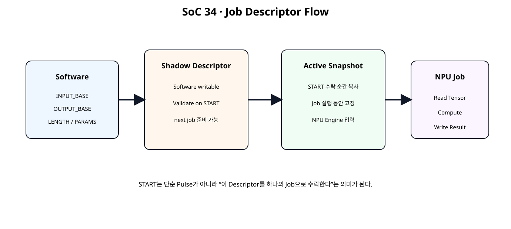
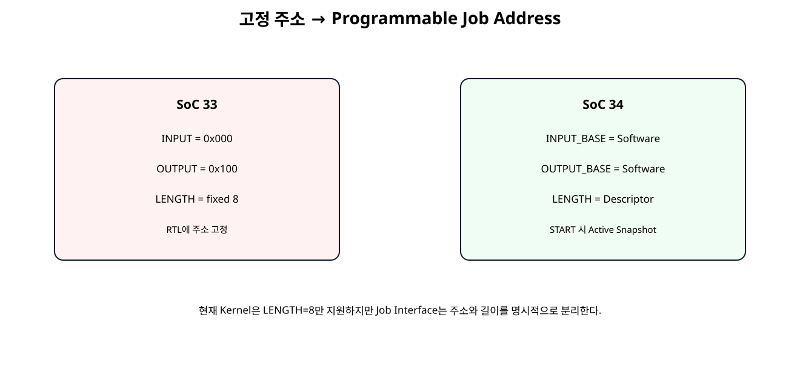
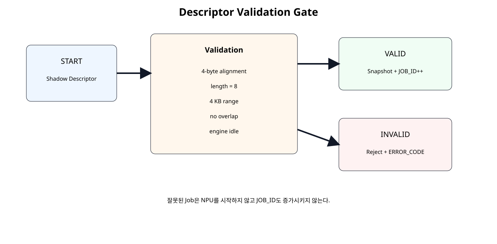

전체 학습 위치
이번 장의 목표

원본 보기 ↗
고정 주소의 한계

원본 보기 ↗
Job Descriptor 개념
Descriptor는 한 번의 Accelerator 작업에 필요한 주소, 길이, Parameter, 상태 정보를 하나의 Job 정의로 묶는 방법이다.
Direct Job과 Scatter-Gather 구분
이번 장은 AXI DMA의 Scatter-Gather Descriptor를 구현하는 장이 아니다. AXI DMA에서 사용되는 Buffer Address, Length, Control, Status와 같은 개념을 참고해 하나의 Job만 직접 실행하는 교육용 Direct Descriptor를 구성한다.
전체 Job Flow
Register Map
| Offset | Register | Access | 역할 |
|---|---|---|---|
| 0x00 | CONTROL | W1P | START / CLEAR_DONE / CLEAR_ERROR |
| 0x04 | STATUS | RO | BUSY / DONE / ERROR / DESC_VALID |
| 0x08 | VERSION | RO | 0x00010000 |
| 0x0C | JOB_ID | RO | 수락된 Job 번호 |
| 0x10 | INPUT_BASE | RW | Tensor Input Byte Address |
| 0x14 | OUTPUT_BASE | RW | Tensor Output Byte Address |
| 0x18 | LENGTH_WORDS | RW | Input Length |
| 0x1C | ERROR_CODE | RO | Descriptor/Engine Error |
| 0x20~0x30 | PARAMETERS | RW | Bias / Scale / Zero Point |
| 0x34~0x3C | ACTIVE_DESC | RO | 현재 Job Snapshot |
| 0x40~0x44 | COUNTERS | RO | Read/Write Word Count |
Shadow Descriptor
Software가 수정하는 작업 준비 영역이다. 다음 Job의 주소와 Parameter를 저장한다.
Active Snapshot
START가 정상 수락되는 Clock에 Shadow 값을 Active Register로 복사한다. Job Engine은 Active 값만 사용한다.
왜 Snapshot이 필요한가
Job 실행 중 Software가 다음 Job을 준비하기 위해 Shadow를 바꾸더라도 현재 NPU의 주소와 Parameter가 변하지 않아야 한다. Shadow/Active 분리는 Software와 Hardware 실행 시점을 분리한다.
INPUT_BASE
Input Tensor가 시작되는 BRAM Byte Address다. 32-bit Word 접근을 사용하므로 4-byte Alignment가 필요하다.
OUTPUT_BASE
결과 Tensor의 시작 Byte Address다. 현재 Kernel은 CH0/CH1 Packed Result 두 Word를 기록하므로 8 Byte 공간이 필요하다.
LENGTH_WORDS
LENGTH_WORDS=8만 Valid하다.Kernel Parameter
Bias, Multiplier, Shift, Zero Point도 Descriptor와 같은 시점에 Active Snapshot으로 복사한다.
Descriptor Validation

원본 보기 ↗
Alignment Check
OUTPUT_BASE[1:0] → 00
Range Check
output_end → OUTPUT_BASE + 8 ≤ 4096
Buffer Overlap Check
Input 범위와 Output 범위가 겹치면 현재 교육용 Kernel은 Reject한다. In-place 연산을 지원한다고 가정하지 않는다.
BUSY Check
Engine이 BUSY인 상태에서 다시 START를 쓰면 Job은 수락하지 않고 Error Code 1을 기록한다.
Error Code
| Code | 원인 |
|---|---|
| 0 | None |
| 1 | BUSY |
| 2 | INPUT alignment |
| 3 | OUTPUT alignment |
| 4 | Length unsupported |
| 5 | Input range |
| 6 | Output range |
| 7 | Buffer overlap |
| 8 | Engine error |
JOB_ID
정상 수락된 START마다 JOB_ID가 1 증가한다. Descriptor 오류나 BUSY 거부 Job은 증가시키지 않는다.
START 의미의 변화
SoC 31의 START는 단순 Hardware Pulse였다. SoC 34부터 START는 “현재 Shadow Descriptor를 검증하고 하나의 Job으로 수락해 실행한다”는 의미를 가진다.
Descriptor Controller RTL
module npu_job_descriptor_controller (
input wire clk,
input wire resetn,
// Software-visible register interface.
input wire wr_en_i,
input wire [7:0] wr_addr_i,
input wire [31:0] wr_data_i,
input wire [3:0] wr_strb_i,
input wire [7:0] rd_addr_i,
output reg [31:0] rd_data_o,
// Job engine handshake/status.
output reg job_start_o,
output reg [11:0] active_input_base_o,
output reg [11:0] active_output_base_o,
output reg [15:0] active_length_words_o,
output reg signed [31:0] active_bias_ch0_o,
output reg signed [31:0] active_bias_ch1_o,
output reg signed [15:0] active_mult_ch0_o,
output reg signed [15:0] active_mult_ch1_o,
output reg [5:0] active_shift_ch0_o,
output reg [5:0] active_shift_ch1_o,
output reg signed [15:0] active_zp_ch0_o,
output reg signed [15:0] active_zp_ch1_o,
input wire engine_busy_i,
input wire engine_done_i,
input wire engine_error_i,
input wire [15:0] read_word_count_i,
input wire [15:0] write_word_count_i,
output wire busy_o,
output reg done_sticky_o,
output reg error_sticky_o,
output reg [7:0] error_code_o,
output reg [31:0] job_id_o
);
// ------------------------------------------------------------
// SoC 34 · Job Descriptor / Command Controller
// ------------------------------------------------------------
//
// Register map:
//
// 0x00 CONTROL W1P
// bit0 START
// bit1 CLEAR_DONE
// bit2 CLEAR_ERROR
//
// 0x04 STATUS RO
// bit0 BUSY
// bit1 DONE_STICKY
// bit2 ERROR_STICKY
// bit3 DESCRIPTOR_VALID
//
// 0x08 VERSION RO = 0x0001_0000
// 0x0C JOB_ID RO
//
// Shadow descriptor:
// 0x10 INPUT_BASE RW byte address, 4-byte aligned
// 0x14 OUTPUT_BASE RW byte address, 4-byte aligned
// 0x18 LENGTH_WORDS RW
// 0x1C ERROR_CODE RO
//
// Kernel parameters:
// 0x20 BIAS_CH0 RW
// 0x24 BIAS_CH1 RW
// 0x28 SCALE_CH0 RW [15:0] multiplier, [21:16] shift
// 0x2C SCALE_CH1 RW
// 0x30 ZERO_POINT RW [15:0] CH0, [31:16] CH1
//
// Active descriptor snapshot:
// 0x34 ACTIVE_INPUT RO
// 0x38 ACTIVE_OUTPUT RO
// 0x3C ACTIVE_LENGTH RO
//
// Engine counters:
// 0x40 READ_WORD_COUNT RO
// 0x44 WRITE_WORD_COUNT RO
//
// Current teaching kernel still consumes exactly 8 int32 input words
// and produces two packed 32-bit output words.
// LENGTH_WORDS therefore must be 8 in SoC 34.
//
// SoC 35 will integrate this controller with the full accelerator
// system while retaining the descriptor concept.
localparam [31:0] VERSION_VALUE = 32'h0001_0000;
localparam [7:0] ERR_NONE = 8'd0;
localparam [7:0] ERR_BUSY = 8'd1;
localparam [7:0] ERR_INPUT_ALIGN = 8'd2;
localparam [7:0] ERR_OUTPUT_ALIGN = 8'd3;
localparam [7:0] ERR_LENGTH_UNSUPPORTED = 8'd4;
localparam [7:0] ERR_INPUT_RANGE = 8'd5;
localparam [7:0] ERR_OUTPUT_RANGE = 8'd6;
localparam [7:0] ERR_BUFFER_OVERLAP = 8'd7;
localparam [7:0] ERR_ENGINE = 8'd8;
function [31:0] apply_wstrb32;
input [31:0] old_value;
input [31:0] new_value;
input [3:0] strb;
integer byte_index;
begin
apply_wstrb32 = old_value;
for (
byte_index = 0;
byte_index < 4;
byte_index = byte_index + 1
) begin
if (strb[byte_index]) begin
apply_wstrb32[
(byte_index * 8) +: 8
] =
new_value[
(byte_index * 8) +: 8
];
end
end
end
endfunction
// ------------------------------------------------------------
// Shadow descriptor.
// ------------------------------------------------------------
reg [11:0] shadow_input_base_q;
reg [11:0] shadow_output_base_q;
reg [15:0] shadow_length_words_q;
reg signed [31:0] shadow_bias_ch0_q;
reg signed [31:0] shadow_bias_ch1_q;
reg signed [15:0] shadow_mult_ch0_q;
reg signed [15:0] shadow_mult_ch1_q;
reg [5:0] shadow_shift_ch0_q;
reg [5:0] shadow_shift_ch1_q;
reg signed [15:0] shadow_zp_ch0_q;
reg signed [15:0] shadow_zp_ch1_q;
wire control_write_w;
assign control_write_w =
wr_en_i &&
(wr_addr_i[7:2] == 6'h00);
wire start_request_w;
wire clear_done_request_w;
wire clear_error_request_w;
assign start_request_w =
control_write_w &&
wr_strb_i[0] &&
wr_data_i[0];
assign clear_done_request_w =
control_write_w &&
wr_strb_i[0] &&
wr_data_i[1];
assign clear_error_request_w =
control_write_w &&
wr_strb_i[0] &&
wr_data_i[2];
assign busy_o =
engine_busy_i;
// ------------------------------------------------------------
// Descriptor validation.
//
// BRAM byte-address range: 0x000..0xFFF.
// Current input span: LENGTH_WORDS * 4 bytes.
// Current output span: 8 bytes.
// ------------------------------------------------------------
wire input_aligned_w;
wire output_aligned_w;
wire length_supported_w;
wire [16:0] input_end_exclusive_w;
wire [12:0] output_end_exclusive_w;
wire input_range_ok_w;
wire output_range_ok_w;
wire no_overlap_w;
wire descriptor_valid_w;
assign input_aligned_w =
(shadow_input_base_q[1:0] == 2'b00);
assign output_aligned_w =
(shadow_output_base_q[1:0] == 2'b00);
assign length_supported_w =
(shadow_length_words_q == 16'd8);
assign input_end_exclusive_w =
{5'd0, shadow_input_base_q} +
({1'b0, shadow_length_words_q} << 2);
assign output_end_exclusive_w =
{1'b0, shadow_output_base_q} +
13'd8;
assign input_range_ok_w =
(input_end_exclusive_w <= 17'h01000);
assign output_range_ok_w =
(output_end_exclusive_w <= 13'h1000);
assign no_overlap_w =
(
output_end_exclusive_w <=
{1'b0, shadow_input_base_q}
) ||
(
input_end_exclusive_w <=
{5'd0, shadow_output_base_q}
);
assign descriptor_valid_w =
input_aligned_w &&
output_aligned_w &&
length_supported_w &&
input_range_ok_w &&
output_range_ok_w &&
no_overlap_w;
function [7:0] descriptor_error_code;
input dummy;
begin
if (!input_aligned_w)
descriptor_error_code = ERR_INPUT_ALIGN;
else if (!output_aligned_w)
descriptor_error_code = ERR_OUTPUT_ALIGN;
else if (!length_supported_w)
descriptor_error_code = ERR_LENGTH_UNSUPPORTED;
else if (!input_range_ok_w)
descriptor_error_code = ERR_INPUT_RANGE;
else if (!output_range_ok_w)
descriptor_error_code = ERR_OUTPUT_RANGE;
else if (!no_overlap_w)
descriptor_error_code = ERR_BUFFER_OVERLAP;
else
descriptor_error_code = ERR_NONE;
end
endfunction
reg [31:0] merged_w;
// ------------------------------------------------------------
// Register / command process.
// ------------------------------------------------------------
always @(posedge clk) begin
if (!resetn) begin
shadow_input_base_q <= 12'h000;
shadow_output_base_q <= 12'h100;
shadow_length_words_q <= 16'd8;
shadow_bias_ch0_q <= 32'sd0;
shadow_bias_ch1_q <= 32'sd4;
shadow_mult_ch0_q <= 16'sd1;
shadow_mult_ch1_q <= 16'sd3;
shadow_shift_ch0_q <= 6'd1;
shadow_shift_ch1_q <= 6'd1;
shadow_zp_ch0_q <= 16'sd0;
shadow_zp_ch1_q <= -16'sd3;
active_input_base_o <= 12'h000;
active_output_base_o <= 12'h100;
active_length_words_o <= 16'd8;
active_bias_ch0_o <= 32'sd0;
active_bias_ch1_o <= 32'sd4;
active_mult_ch0_o <= 16'sd1;
active_mult_ch1_o <= 16'sd3;
active_shift_ch0_o <= 6'd1;
active_shift_ch1_o <= 6'd1;
active_zp_ch0_o <= 16'sd0;
active_zp_ch1_o <= -16'sd3;
job_start_o <= 1'b0;
done_sticky_o <= 1'b0;
error_sticky_o <= 1'b0;
error_code_o <= ERR_NONE;
job_id_o <= 32'd0;
end else begin
job_start_o <= 1'b0;
if (clear_done_request_w) begin
done_sticky_o <= 1'b0;
end
if (clear_error_request_w) begin
error_sticky_o <= 1'b0;
error_code_o <= ERR_NONE;
end
if (engine_done_i) begin
done_sticky_o <= 1'b1;
end
if (engine_error_i) begin
error_sticky_o <= 1'b1;
error_code_o <= ERR_ENGINE;
end
// START snapshots the descriptor only when valid and idle.
if (start_request_w) begin
if (engine_busy_i) begin
error_sticky_o <= 1'b1;
error_code_o <= ERR_BUSY;
end else if (!descriptor_valid_w) begin
error_sticky_o <= 1'b1;
error_code_o <= descriptor_error_code(1'b0);
end else begin
active_input_base_o <= shadow_input_base_q;
active_output_base_o <= shadow_output_base_q;
active_length_words_o <= shadow_length_words_q;
active_bias_ch0_o <= shadow_bias_ch0_q;
active_bias_ch1_o <= shadow_bias_ch1_q;
active_mult_ch0_o <= shadow_mult_ch0_q;
active_mult_ch1_o <= shadow_mult_ch1_q;
active_shift_ch0_o <= shadow_shift_ch0_q;
active_shift_ch1_o <= shadow_shift_ch1_q;
active_zp_ch0_o <= shadow_zp_ch0_q;
active_zp_ch1_o <= shadow_zp_ch1_q;
job_start_o <= 1'b1;
done_sticky_o <= 1'b0;
error_sticky_o <= 1'b0;
error_code_o <= ERR_NONE;
job_id_o <= job_id_o + 32'd1;
end
end
// Shadow descriptor/register writes are legal while a job runs.
// They do not affect the current active snapshot.
if (wr_en_i) begin
case (wr_addr_i[7:2])
6'h04: begin
merged_w = apply_wstrb32(
{20'd0, shadow_input_base_q},
wr_data_i,
wr_strb_i
);
shadow_input_base_q <= merged_w[11:0];
end
6'h05: begin
merged_w = apply_wstrb32(
{20'd0, shadow_output_base_q},
wr_data_i,
wr_strb_i
);
shadow_output_base_q <= merged_w[11:0];
end
6'h06: begin
merged_w = apply_wstrb32(
{16'd0, shadow_length_words_q},
wr_data_i,
wr_strb_i
);
shadow_length_words_q <= merged_w[15:0];
end
6'h08: begin
merged_w = apply_wstrb32(
shadow_bias_ch0_q,
wr_data_i,
wr_strb_i
);
shadow_bias_ch0_q <= $signed(merged_w);
end
6'h09: begin
merged_w = apply_wstrb32(
shadow_bias_ch1_q,
wr_data_i,
wr_strb_i
);
shadow_bias_ch1_q <= $signed(merged_w);
end
6'h0A: begin
merged_w = apply_wstrb32(
{
10'd0,
shadow_shift_ch0_q,
shadow_mult_ch0_q
},
wr_data_i,
wr_strb_i
);
shadow_mult_ch0_q <=
$signed(merged_w[15:0]);
shadow_shift_ch0_q <=
merged_w[21:16];
end
6'h0B: begin
merged_w = apply_wstrb32(
{
10'd0,
shadow_shift_ch1_q,
shadow_mult_ch1_q
},
wr_data_i,
wr_strb_i
);
shadow_mult_ch1_q <=
$signed(merged_w[15:0]);
shadow_shift_ch1_q <=
merged_w[21:16];
end
6'h0C: begin
merged_w = apply_wstrb32(
{
shadow_zp_ch1_q,
shadow_zp_ch0_q
},
wr_data_i,
wr_strb_i
);
shadow_zp_ch0_q <=
$signed(merged_w[15:0]);
shadow_zp_ch1_q <=
$signed(merged_w[31:16]);
end
default: begin
end
endcase
end
end
end
// ------------------------------------------------------------
// Read mux.
// ------------------------------------------------------------
always @(*) begin
case (rd_addr_i[7:2])
6'h00: rd_data_o = 32'h0000_0000;
6'h01: rd_data_o = {
28'd0,
descriptor_valid_w,
error_sticky_o,
done_sticky_o,
engine_busy_i
};
6'h02: rd_data_o = VERSION_VALUE;
6'h03: rd_data_o = job_id_o;
6'h04: rd_data_o = {20'd0, shadow_input_base_q};
6'h05: rd_data_o = {20'd0, shadow_output_base_q};
6'h06: rd_data_o = {16'd0, shadow_length_words_q};
6'h07: rd_data_o = {24'd0, error_code_o};
6'h08: rd_data_o = shadow_bias_ch0_q;
6'h09: rd_data_o = shadow_bias_ch1_q;
6'h0A: rd_data_o = {
10'd0,
shadow_shift_ch0_q,
shadow_mult_ch0_q
};
6'h0B: rd_data_o = {
10'd0,
shadow_shift_ch1_q,
shadow_mult_ch1_q
};
6'h0C: rd_data_o = {
shadow_zp_ch1_q,
shadow_zp_ch0_q
};
6'h0D: rd_data_o = {20'd0, active_input_base_o};
6'h0E: rd_data_o = {20'd0, active_output_base_o};
6'h0F: rd_data_o = {16'd0, active_length_words_o};
6'h10: rd_data_o = {16'd0, read_word_count_i};
6'h11: rd_data_o = {16'd0, write_word_count_i};
default: rd_data_o = 32'h0000_0000;
endcase
end
endmodule
Programmable Tensor Engine
module tensor_job_engine (
input wire clk,
input wire resetn,
input wire start_i,
input wire [11:0] input_base_i,
input wire [11:0] output_base_i,
input wire [15:0] length_words_i,
input wire signed [31:0] bias_ch0_i,
input wire signed [31:0] bias_ch1_i,
input wire signed [15:0] mult_ch0_i,
input wire signed [15:0] mult_ch1_i,
input wire [5:0] shift_ch0_i,
input wire [5:0] shift_ch1_i,
input wire signed [15:0] zp_ch0_i,
input wire signed [15:0] zp_ch1_i,
output wire busy_o,
output reg done_o,
output reg error_o,
output reg bram_en_o,
output reg [3:0] bram_we_o,
output reg [11:0] bram_addr_o,
output reg [31:0] bram_wdata_o,
input wire [31:0] bram_rdata_i,
output reg [15:0] read_word_count_o,
output reg [15:0] write_word_count_o
);
// Current SoC 34 teaching kernel accepts exactly 8 input words.
// Descriptor validation is performed by the controller before START.
localparam [3:0] ST_IDLE = 4'd0;
localparam [3:0] ST_READ_REQ = 4'd1;
localparam [3:0] ST_READ_CAPTURE = 4'd2;
localparam [3:0] ST_START_REQUANT = 4'd3;
localparam [3:0] ST_WAIT_RESULT = 4'd4;
localparam [3:0] ST_WRITE_CH0 = 4'd5;
localparam [3:0] ST_WRITE_CH1 = 4'd6;
localparam [3:0] ST_DONE = 4'd7;
reg [3:0] state_q;
reg [3:0] read_index_q;
reg [127:0] acc_ch0_batch_q;
reg [127:0] acc_ch1_batch_q;
reg requant_start_q;
wire requant_busy_w;
wire requant_done_w;
wire requant_result_valid_w;
wire [31:0] q_ch0_batch_w;
wire [31:0] q_ch1_batch_w;
wire [7:0] saturation_count_w;
assign busy_o =
(state_q != ST_IDLE) &&
(state_q != ST_DONE);
requantize_batch2x4_serial u_requant_batch (
.clk(clk),
.resetn(resetn),
.start_i(requant_start_q),
.acc_ch0_batch_i(acc_ch0_batch_q),
.acc_ch1_batch_i(acc_ch1_batch_q),
.bias_ch0_i(bias_ch0_i),
.bias_ch1_i(bias_ch1_i),
.mult_ch0_i(mult_ch0_i),
.mult_ch1_i(mult_ch1_i),
.shift_ch0_i(shift_ch0_i),
.shift_ch1_i(shift_ch1_i),
.zp_ch0_i(zp_ch0_i),
.zp_ch1_i(zp_ch1_i),
.busy_o(requant_busy_w),
.done_o(requant_done_w),
.result_valid_o(requant_result_valid_w),
.q_ch0_batch_o(q_ch0_batch_w),
.q_ch1_batch_o(q_ch1_batch_w),
.saturation_count_o(saturation_count_w)
);
always @(*) begin
bram_en_o = 1'b0;
bram_we_o = 4'b0000;
bram_addr_o = 12'h000;
bram_wdata_o = 32'h0000_0000;
case (state_q)
ST_READ_REQ: begin
bram_en_o = 1'b1;
bram_we_o = 4'b0000;
bram_addr_o =
input_base_i +
{read_index_q, 2'b00};
end
ST_WRITE_CH0: begin
bram_en_o = 1'b1;
bram_we_o = 4'b1111;
bram_addr_o = output_base_i;
bram_wdata_o = q_ch0_batch_w;
end
ST_WRITE_CH1: begin
bram_en_o = 1'b1;
bram_we_o = 4'b1111;
bram_addr_o = output_base_i + 12'd4;
bram_wdata_o = q_ch1_batch_w;
end
default: begin
end
endcase
end
always @(posedge clk) begin
if (!resetn) begin
state_q <= ST_IDLE;
read_index_q <= 4'd0;
acc_ch0_batch_q <= 128'd0;
acc_ch1_batch_q <= 128'd0;
requant_start_q <= 1'b0;
done_o <= 1'b0;
error_o <= 1'b0;
read_word_count_o <= 16'd0;
write_word_count_o <= 16'd0;
end else begin
requant_start_q <= 1'b0;
done_o <= 1'b0;
case (state_q)
ST_IDLE: begin
if (start_i) begin
if (length_words_i != 16'd8) begin
error_o <= 1'b1;
done_o <= 1'b1;
end else begin
error_o <= 1'b0;
read_index_q <= 4'd0;
acc_ch0_batch_q <= 128'd0;
acc_ch1_batch_q <= 128'd0;
read_word_count_o <= 16'd0;
write_word_count_o <= 16'd0;
state_q <= ST_READ_REQ;
end
end
end
ST_READ_REQ: begin
state_q <= ST_READ_CAPTURE;
end
ST_READ_CAPTURE: begin
read_word_count_o <=
read_word_count_o + 16'd1;
case (read_index_q)
4'd0: acc_ch0_batch_q[31:0] <= bram_rdata_i;
4'd1: acc_ch0_batch_q[63:32] <= bram_rdata_i;
4'd2: acc_ch0_batch_q[95:64] <= bram_rdata_i;
4'd3: acc_ch0_batch_q[127:96] <= bram_rdata_i;
4'd4: acc_ch1_batch_q[31:0] <= bram_rdata_i;
4'd5: acc_ch1_batch_q[63:32] <= bram_rdata_i;
4'd6: acc_ch1_batch_q[95:64] <= bram_rdata_i;
default:
acc_ch1_batch_q[127:96] <= bram_rdata_i;
endcase
if (read_index_q == 4'd7) begin
state_q <= ST_START_REQUANT;
end else begin
read_index_q <=
read_index_q + 4'd1;
state_q <= ST_READ_REQ;
end
end
ST_START_REQUANT: begin
if (!requant_busy_w) begin
requant_start_q <= 1'b1;
state_q <= ST_WAIT_RESULT;
end
end
ST_WAIT_RESULT: begin
if (requant_result_valid_w) begin
state_q <= ST_WRITE_CH0;
end
end
ST_WRITE_CH0: begin
write_word_count_o <=
write_word_count_o + 16'd1;
state_q <= ST_WRITE_CH1;
end
ST_WRITE_CH1: begin
write_word_count_o <=
write_word_count_o + 16'd1;
state_q <= ST_DONE;
end
ST_DONE: begin
done_o <= 1'b1;
state_q <= ST_IDLE;
end
default: begin
error_o <= 1'b1;
state_q <= ST_IDLE;
end
endcase
end
end
endmodule
Demo Top
module npu_job_descriptor_demo_top (
input wire clk,
input wire resetn,
// CPU register interface.
input wire reg_wr_en_i,
input wire [7:0] reg_wr_addr_i,
input wire [31:0] reg_wr_data_i,
input wire [3:0] reg_wr_strb_i,
input wire [7:0] reg_rd_addr_i,
output wire [31:0] reg_rd_data_o,
// CPU tensor-memory interface.
input wire mem_en_i,
input wire [3:0] mem_we_i,
input wire [11:0] mem_addr_i,
input wire [31:0] mem_wdata_i,
output wire [31:0] mem_rdata_o,
output wire busy_o,
output wire done_sticky_o,
output wire error_sticky_o,
output wire [7:0] error_code_o,
output wire [31:0] job_id_o
);
// Pure Shell / Wrapper.
//
// SoC 34 separates:
// Descriptor/control registers
// Tensor BRAM data plane
// Job engine
//
// Actual AXI shells are added around these interfaces in the
// integrated SoC path. This chapter focuses on Job semantics.
wire job_start;
wire [11:0] active_input_base;
wire [11:0] active_output_base;
wire [15:0] active_length_words;
wire signed [31:0] active_bias_ch0;
wire signed [31:0] active_bias_ch1;
wire signed [15:0] active_mult_ch0;
wire signed [15:0] active_mult_ch1;
wire [5:0] active_shift_ch0;
wire [5:0] active_shift_ch1;
wire signed [15:0] active_zp_ch0;
wire signed [15:0] active_zp_ch1;
wire engine_busy;
wire engine_done;
wire engine_error;
wire [15:0] read_word_count;
wire [15:0] write_word_count;
wire npu_bram_en;
wire [3:0] npu_bram_we;
wire [11:0] npu_bram_addr;
wire [31:0] npu_bram_wdata;
wire [31:0] npu_bram_rdata;
npu_job_descriptor_controller u_descriptor (
.clk(clk),
.resetn(resetn),
.wr_en_i(reg_wr_en_i),
.wr_addr_i(reg_wr_addr_i),
.wr_data_i(reg_wr_data_i),
.wr_strb_i(reg_wr_strb_i),
.rd_addr_i(reg_rd_addr_i),
.rd_data_o(reg_rd_data_o),
.job_start_o(job_start),
.active_input_base_o(active_input_base),
.active_output_base_o(active_output_base),
.active_length_words_o(active_length_words),
.active_bias_ch0_o(active_bias_ch0),
.active_bias_ch1_o(active_bias_ch1),
.active_mult_ch0_o(active_mult_ch0),
.active_mult_ch1_o(active_mult_ch1),
.active_shift_ch0_o(active_shift_ch0),
.active_shift_ch1_o(active_shift_ch1),
.active_zp_ch0_o(active_zp_ch0),
.active_zp_ch1_o(active_zp_ch1),
.engine_busy_i(engine_busy),
.engine_done_i(engine_done),
.engine_error_i(engine_error),
.read_word_count_i(read_word_count),
.write_word_count_i(write_word_count),
.busy_o(busy_o),
.done_sticky_o(done_sticky_o),
.error_sticky_o(error_sticky_o),
.error_code_o(error_code_o),
.job_id_o(job_id_o)
);
tensor_job_engine u_engine (
.clk(clk),
.resetn(resetn),
.start_i(job_start),
.input_base_i(active_input_base),
.output_base_i(active_output_base),
.length_words_i(active_length_words),
.bias_ch0_i(active_bias_ch0),
.bias_ch1_i(active_bias_ch1),
.mult_ch0_i(active_mult_ch0),
.mult_ch1_i(active_mult_ch1),
.shift_ch0_i(active_shift_ch0),
.shift_ch1_i(active_shift_ch1),
.zp_ch0_i(active_zp_ch0),
.zp_ch1_i(active_zp_ch1),
.busy_o(engine_busy),
.done_o(engine_done),
.error_o(engine_error),
.bram_en_o(npu_bram_en),
.bram_we_o(npu_bram_we),
.bram_addr_o(npu_bram_addr),
.bram_wdata_o(npu_bram_wdata),
.bram_rdata_i(npu_bram_rdata),
.read_word_count_o(read_word_count),
.write_word_count_o(write_word_count)
);
tensor_bram_tdp_4k_model u_tensor_bram (
.clk(clk),
.a_en_i(mem_en_i),
.a_we_i(mem_we_i),
.a_addr_i(mem_addr_i),
.a_wdata_i(mem_wdata_i),
.a_rdata_o(mem_rdata_o),
.b_en_i(npu_bram_en),
.b_we_i(npu_bram_we),
.b_addr_i(npu_bram_addr),
.b_wdata_i(npu_bram_wdata),
.b_rdata_o(npu_bram_rdata)
);
endmodule
Top은 Descriptor Controller, Job Engine, Tensor BRAM을 연결하는 Shell/Wrapper 역할만 한다.
Software Descriptor Struct
#ifndef NPU_JOB_H
#define NPU_JOB_H
#include "xil_io.h"
#include "xil_types.h"
#define NPU_JOB_CONTROL_OFFSET 0x00U
#define NPU_JOB_STATUS_OFFSET 0x04U
#define NPU_JOB_VERSION_OFFSET 0x08U
#define NPU_JOB_ID_OFFSET 0x0CU
#define NPU_JOB_INPUT_BASE_OFFSET 0x10U
#define NPU_JOB_OUTPUT_BASE_OFFSET 0x14U
#define NPU_JOB_LENGTH_WORDS_OFFSET 0x18U
#define NPU_JOB_ERROR_CODE_OFFSET 0x1CU
#define NPU_JOB_BIAS_CH0_OFFSET 0x20U
#define NPU_JOB_BIAS_CH1_OFFSET 0x24U
#define NPU_JOB_SCALE_CH0_OFFSET 0x28U
#define NPU_JOB_SCALE_CH1_OFFSET 0x2CU
#define NPU_JOB_ZERO_POINT_OFFSET 0x30U
#define NPU_JOB_ACTIVE_INPUT_OFFSET 0x34U
#define NPU_JOB_ACTIVE_OUTPUT_OFFSET 0x38U
#define NPU_JOB_ACTIVE_LENGTH_OFFSET 0x3CU
#define NPU_JOB_READ_COUNT_OFFSET 0x40U
#define NPU_JOB_WRITE_COUNT_OFFSET 0x44U
#define NPU_JOB_CONTROL_START_MASK 0x00000001U
#define NPU_JOB_CONTROL_CLR_DONE_MASK 0x00000002U
#define NPU_JOB_CONTROL_CLR_ERROR_MASK 0x00000004U
#define NPU_JOB_STATUS_BUSY_MASK 0x00000001U
#define NPU_JOB_STATUS_DONE_MASK 0x00000002U
#define NPU_JOB_STATUS_ERROR_MASK 0x00000004U
#define NPU_JOB_STATUS_DESC_VALID_MASK 0x00000008U
typedef struct {
u32 InputBase;
u32 OutputBase;
u32 LengthWords;
s32 BiasCh0;
s32 BiasCh1;
s16 MultCh0;
s16 MultCh1;
u8 ShiftCh0;
u8 ShiftCh1;
s16 ZpCh0;
s16 ZpCh1;
} NpuJobDescriptor;
static inline void NpuJob_WriteReg(
UINTPTR BaseAddress,
u32 Offset,
u32 Value
)
{
Xil_Out32(BaseAddress + (UINTPTR)Offset, Value);
}
static inline u32 NpuJob_ReadReg(
UINTPTR BaseAddress,
u32 Offset
)
{
return Xil_In32(BaseAddress + (UINTPTR)Offset);
}
static inline u32 NpuJob_PackScale(
s16 Multiplier,
u8 Shift
)
{
return
((u32)Multiplier & 0x0000FFFFU) |
(((u32)Shift & 0x3FU) << 16U);
}
static inline u32 NpuJob_PackZeroPoint(
s16 ZpCh0,
s16 ZpCh1
)
{
return
((u32)ZpCh0 & 0x0000FFFFU) |
(((u32)ZpCh1 & 0x0000FFFFU) << 16U);
}
static inline void NpuJob_Program(
UINTPTR BaseAddress,
const NpuJobDescriptor *Job
)
{
NpuJob_WriteReg(
BaseAddress,
NPU_JOB_INPUT_BASE_OFFSET,
Job->InputBase
);
NpuJob_WriteReg(
BaseAddress,
NPU_JOB_OUTPUT_BASE_OFFSET,
Job->OutputBase
);
NpuJob_WriteReg(
BaseAddress,
NPU_JOB_LENGTH_WORDS_OFFSET,
Job->LengthWords
);
NpuJob_WriteReg(
BaseAddress,
NPU_JOB_BIAS_CH0_OFFSET,
(u32)Job->BiasCh0
);
NpuJob_WriteReg(
BaseAddress,
NPU_JOB_BIAS_CH1_OFFSET,
(u32)Job->BiasCh1
);
NpuJob_WriteReg(
BaseAddress,
NPU_JOB_SCALE_CH0_OFFSET,
NpuJob_PackScale(
Job->MultCh0,
Job->ShiftCh0
)
);
NpuJob_WriteReg(
BaseAddress,
NPU_JOB_SCALE_CH1_OFFSET,
NpuJob_PackScale(
Job->MultCh1,
Job->ShiftCh1
)
);
NpuJob_WriteReg(
BaseAddress,
NPU_JOB_ZERO_POINT_OFFSET,
NpuJob_PackZeroPoint(
Job->ZpCh0,
Job->ZpCh1
)
);
}
static inline void NpuJob_Start(UINTPTR BaseAddress)
{
NpuJob_WriteReg(
BaseAddress,
NPU_JOB_CONTROL_OFFSET,
NPU_JOB_CONTROL_START_MASK
);
}
#endif
Descriptor Programming
Software Demo
#include "xil_printf.h"
#include "xparameters.h"
#include "npu_job.h"
// Actual Base Address comes from Vivado Address Editor / xparameters.h.
#ifndef NPU_JOB_BASEADDR
#error "Define NPU_JOB_BASEADDR from generated xparameters.h."
#endif
int main(void)
{
const UINTPTR base = (UINTPTR)NPU_JOB_BASEADDR;
const NpuJobDescriptor job = {
.InputBase = 0x200U,
.OutputBase = 0x300U,
.LengthWords = 8U,
.BiasCh0 = 0,
.BiasCh1 = 4,
.MultCh0 = 1,
.MultCh1 = 3,
.ShiftCh0 = 1U,
.ShiftCh1 = 1U,
.ZpCh0 = 0,
.ZpCh1 = -3
};
u32 status;
u32 timeout;
u32 error_code;
u32 job_id;
xil_printf("\r\nSoC34 NPU Job Descriptor demo\r\n");
NpuJob_Program(base, &job);
status = NpuJob_ReadReg(
base,
NPU_JOB_STATUS_OFFSET
);
if (
(status & NPU_JOB_STATUS_DESC_VALID_MASK) == 0U
) {
xil_printf("ERROR: descriptor invalid before START\r\n");
return 1;
}
NpuJob_Start(base);
timeout = 1000000U;
do {
status = NpuJob_ReadReg(
base,
NPU_JOB_STATUS_OFFSET
);
timeout--;
} while (
((status & NPU_JOB_STATUS_DONE_MASK) == 0U) &&
((status & NPU_JOB_STATUS_ERROR_MASK) == 0U) &&
(timeout != 0U)
);
if (timeout == 0U) {
xil_printf("ERROR: job timeout\r\n");
return 1;
}
if ((status & NPU_JOB_STATUS_ERROR_MASK) != 0U) {
error_code = NpuJob_ReadReg(
base,
NPU_JOB_ERROR_CODE_OFFSET
);
xil_printf(
"ERROR: descriptor/job error code = %u\r\n",
(unsigned int)error_code
);
return 1;
}
job_id = NpuJob_ReadReg(
base,
NPU_JOB_ID_OFFSET
);
xil_printf(
"JOB_ID = %u\r\n",
(unsigned int)job_id
);
xil_printf(
"READ_WORD_COUNT = %u\r\n",
(unsigned int)NpuJob_ReadReg(
base,
NPU_JOB_READ_COUNT_OFFSET
)
);
xil_printf(
"WRITE_WORD_COUNT = %u\r\n",
(unsigned int)NpuJob_ReadReg(
base,
NPU_JOB_WRITE_COUNT_OFFSET
)
);
xil_printf("SOC34 JOB CONTROL: PASS\r\n");
return 0;
}
실제 Base Address는 Address Editor와 xparameters.h에서 얻으며 자료에서 절대 주소를 임의로 고정하지 않는다.
Shadow 변경 중 Active 고정
Rejected Job
Descriptor Validation을 통과하지 못하면 Engine START를 발생시키지 않는다. JOB_ID도 증가하지 않으며 ERROR_CODE만 기록한다.
Self-Checking Testbench
`timescale 1ns / 1ps
module tb_npu_job_descriptor;
logic clk = 1'b0;
logic resetn = 1'b0;
logic reg_wr_en_i = 1'b0;
logic [7:0] reg_wr_addr_i = 8'h00;
logic [31:0] reg_wr_data_i = 32'h0000_0000;
logic [3:0] reg_wr_strb_i = 4'h0;
logic [7:0] reg_rd_addr_i = 8'h00;
wire [31:0] reg_rd_data_o;
logic mem_en_i = 1'b0;
logic [3:0] mem_we_i = 4'b0000;
logic [11:0] mem_addr_i = 12'h000;
logic [31:0] mem_wdata_i = 32'h0000_0000;
wire [31:0] mem_rdata_o;
wire busy_o;
wire done_sticky_o;
wire error_sticky_o;
wire [7:0] error_code_o;
wire [31:0] job_id_o;
integer check_count = 0;
integer error_count = 0;
always #5 clk = ~clk;
npu_job_descriptor_demo_top dut (
.clk(clk),
.resetn(resetn),
.reg_wr_en_i(reg_wr_en_i),
.reg_wr_addr_i(reg_wr_addr_i),
.reg_wr_data_i(reg_wr_data_i),
.reg_wr_strb_i(reg_wr_strb_i),
.reg_rd_addr_i(reg_rd_addr_i),
.reg_rd_data_o(reg_rd_data_o),
.mem_en_i(mem_en_i),
.mem_we_i(mem_we_i),
.mem_addr_i(mem_addr_i),
.mem_wdata_i(mem_wdata_i),
.mem_rdata_o(mem_rdata_o),
.busy_o(busy_o),
.done_sticky_o(done_sticky_o),
.error_sticky_o(error_sticky_o),
.error_code_o(error_code_o),
.job_id_o(job_id_o)
);
task automatic check_true(
input string name,
input bit condition
);
begin
check_count = check_count + 1;
if (!condition) begin
error_count = error_count + 1;
$error("CHECK FAIL: %s", name);
end else begin
$display("CHECK PASS: %s", name);
end
end
endtask
task automatic check_eq32(
input string name,
input logic [31:0] actual,
input logic [31:0] expected
);
begin
check_count = check_count + 1;
if (actual !== expected) begin
error_count = error_count + 1;
$error(
"CHECK FAIL: %s actual=0x%08h expected=0x%08h",
name,
actual,
expected
);
end else begin
$display(
"CHECK PASS: %s = 0x%08h",
name,
actual
);
end
end
endtask
task automatic reg_write(
input [7:0] address,
input [31:0] data
);
begin
@(negedge clk);
reg_wr_en_i = 1'b1;
reg_wr_addr_i = address;
reg_wr_data_i = data;
reg_wr_strb_i = 4'hF;
@(posedge clk);
#1;
@(negedge clk);
reg_wr_en_i = 1'b0;
reg_wr_addr_i = 8'h00;
reg_wr_data_i = 32'h0000_0000;
reg_wr_strb_i = 4'h0;
end
endtask
task automatic reg_read(
input [7:0] address,
output [31:0] data
);
begin
reg_rd_addr_i = address;
#1;
data = reg_rd_data_o;
end
endtask
task automatic mem_write32(
input [11:0] address,
input [31:0] data
);
begin
@(negedge clk);
mem_en_i = 1'b1;
mem_we_i = 4'hF;
mem_addr_i = address;
mem_wdata_i = data;
@(posedge clk);
#1;
@(negedge clk);
mem_en_i = 1'b0;
mem_we_i = 4'h0;
mem_addr_i = 12'h000;
mem_wdata_i = 32'h0000_0000;
end
endtask
task automatic mem_read32(
input [11:0] address,
output [31:0] data
);
begin
@(negedge clk);
mem_en_i = 1'b1;
mem_we_i = 4'h0;
mem_addr_i = address;
@(posedge clk);
#1;
@(negedge clk);
mem_en_i = 1'b0;
mem_addr_i = 12'h000;
data = mem_rdata_o;
end
endtask
task automatic wait_busy;
integer timeout;
begin
timeout = 0;
while (busy_o !== 1'b1) begin
@(posedge clk);
#1;
timeout = timeout + 1;
if (timeout > 30) begin
$fatal(1, "BUSY did not assert");
end
end
end
endtask
task automatic wait_done;
integer timeout;
begin
timeout = 0;
while (done_sticky_o !== 1'b1) begin
@(posedge clk);
#1;
timeout = timeout + 1;
if (timeout > 250) begin
$fatal(1, "DONE did not assert");
end
end
end
endtask
initial begin
reg [31:0] rd;
reg [31:0] job_id_before;
repeat (5) @(posedge clk);
resetn = 1'b1;
// --------------------------------------------------------
// 1. Prepare input tensor at programmable INPUT_BASE=0x200.
// --------------------------------------------------------
mem_write32(12'h200, 32'd16);
mem_write32(12'h204, 32'd32);
mem_write32(12'h208, 32'd48);
mem_write32(12'h20C, 32'd64);
mem_write32(12'h210, 32'd32);
mem_write32(12'h214, 32'd64);
mem_write32(12'h218, 32'd96);
mem_write32(12'h21C, 32'd128);
// Shadow descriptor.
reg_write(8'h10, 32'h0000_0200);
reg_write(8'h14, 32'h0000_0300);
reg_write(8'h18, 32'd8);
reg_read(8'h04, rd);
check_true(
"descriptor valid before START",
(rd & 32'h8) != 0
);
// --------------------------------------------------------
// 2. START -> active snapshot.
// --------------------------------------------------------
reg_write(8'h00, 32'h0000_0001);
wait_busy();
reg_read(8'h0C, rd);
check_eq32(
"JOB_ID first accepted job",
rd,
32'd1
);
reg_read(8'h34, rd);
check_eq32(
"ACTIVE_INPUT snapshot",
rd,
32'h0000_0200
);
reg_read(8'h38, rd);
check_eq32(
"ACTIVE_OUTPUT snapshot",
rd,
32'h0000_0300
);
// Change shadow while current job is running.
// Current active addresses must remain unchanged.
reg_write(8'h10, 32'h0000_0400);
reg_write(8'h14, 32'h0000_0500);
reg_read(8'h34, rd);
check_eq32(
"ACTIVE_INPUT stable while shadow changes",
rd,
32'h0000_0200
);
reg_read(8'h38, rd);
check_eq32(
"ACTIVE_OUTPUT stable while shadow changes",
rd,
32'h0000_0300
);
wait_done();
check_true(
"first job no error",
error_sticky_o === 1'b0
);
reg_read(8'h40, rd);
check_eq32(
"READ_WORD_COUNT",
rd,
32'd8
);
reg_read(8'h44, rd);
check_eq32(
"WRITE_WORD_COUNT",
rd,
32'd2
);
mem_read32(12'h300, rd);
check_eq32(
"descriptor output CH0",
rd,
32'h2018_1008
);
mem_read32(12'h304, rd);
check_eq32(
"descriptor output CH1",
rd,
32'h7F7F_6333
);
// --------------------------------------------------------
// 3. Invalid descriptor: unaligned INPUT_BASE.
// --------------------------------------------------------
reg_write(8'h00, 32'h0000_0006);
reg_read(8'h0C, job_id_before);
reg_write(8'h10, 32'h0000_0202);
reg_write(8'h14, 32'h0000_0600);
reg_write(8'h18, 32'd8);
reg_write(8'h00, 32'h0000_0001);
repeat (2) @(posedge clk);
#1;
check_true(
"unaligned descriptor rejected",
error_sticky_o === 1'b1
);
check_true(
"unaligned error code = 2",
error_code_o == 8'd2
);
check_eq32(
"rejected job does not increment JOB_ID",
job_id_o,
job_id_before
);
// --------------------------------------------------------
// 4. Invalid descriptor: unsupported length.
// --------------------------------------------------------
reg_write(8'h00, 32'h0000_0004);
reg_write(8'h10, 32'h0000_0200);
reg_write(8'h14, 32'h0000_0600);
reg_write(8'h18, 32'd7);
reg_write(8'h00, 32'h0000_0001);
repeat (2) @(posedge clk);
#1;
check_true(
"length 7 rejected",
error_sticky_o === 1'b1
);
check_true(
"length error code = 4",
error_code_o == 8'd4
);
// --------------------------------------------------------
// 5. Invalid descriptor: input/output overlap.
// --------------------------------------------------------
reg_write(8'h00, 32'h0000_0004);
reg_write(8'h10, 32'h0000_0200);
reg_write(8'h14, 32'h0000_0210);
reg_write(8'h18, 32'd8);
reg_write(8'h00, 32'h0000_0001);
repeat (2) @(posedge clk);
#1;
check_true(
"overlap descriptor rejected",
error_sticky_o === 1'b1
);
check_true(
"overlap error code = 7",
error_code_o == 8'd7
);
// --------------------------------------------------------
// 6. Invalid descriptor: input out of 4KB range.
// --------------------------------------------------------
reg_write(8'h00, 32'h0000_0004);
reg_write(8'h10, 32'h0000_0FF0);
reg_write(8'h14, 32'h0000_0100);
reg_write(8'h18, 32'd8);
reg_write(8'h00, 32'h0000_0001);
repeat (2) @(posedge clk);
#1;
check_true(
"input range descriptor rejected",
error_sticky_o === 1'b1
);
check_true(
"input range error code = 5",
error_code_o == 8'd5
);
$display("");
$display("SOC34 CHECK COUNT : %0d", check_count);
$display("SOC34 ERROR COUNT : %0d", error_count);
if (error_count == 0) begin
$display("SOC34 JOB DESCRIPTOR TEST: PASS");
end else begin
$fatal(
1,
"SOC34 JOB DESCRIPTOR TEST: FAIL (%0d errors)",
error_count
);
end
#20;
$finish;
end
endmodule
Valid Job Test
Invalid Alignment Test
Invalid Length Test
Overlap / Range Test
Python Reference
valid descriptor 0x200 -> 0x300, length=8: PASS
unaligned input -> error 2
unaligned output -> error 3
unsupported length -> error 4
input range -> error 5
output range -> error 6
buffer overlap -> error 7
shadow changes do not modify active snapshot: PASS
accepted job increments JOB_ID; rejected job does not
SOC34 PYTHON JOB-DESCRIPTOR REFERENCE: PASS
Spreadsheet runtime warmup failed during python startup
Traceback (most recent call last):
File "/tmp/tmp.L2TH2Y5coc/artifact_tool_v2-2.8.22/artifact_tool/patches/warm_spreadsheet_runtime_on_startup.py", line 26, in warm_spreadsheet_runtime_on_startup
File "/tmp/tmp.L2TH2Y5coc/artifact_tool_v2-2.8.22/artifact_tool/spreadsheet_warmup.py", line 772, in warm_spreadsheet_runtime
File "/tmp/tmp.L2TH2Y5coc/artifact_tool_v2-2.8.22/artifact_tool/rpc/connection.py", line 37, in get_or_create_client
File "/tmp/tmp.L2TH2Y5coc/artifact_tool_v2-2.8.22/artifact_tool/rpc/daemon.py", line 124, in start_daemon
TimeoutError: Timed out waiting for artifact tool daemon socket. Set ARTIFACT_TOOL_RPC_DAEMON_STARTUP_TIMEOUT_S=<seconds> to increase the limit.
OOC Synthesis
# SoC 34 · Job Descriptor / Data Plane OOC synthesis
set script_dir [file dirname [file normalize [info script]]]
set root_dir [file normalize [file join $script_dir ".."]]
set rtl_dir [file join $root_dir "rtl"]
set out_dir [file normalize [file join $root_dir "reports" "generic_ooc"]]
file mkdir $out_dir
create_project -in_memory -part xc7a35tcpg236-1
read_verilog [file join $rtl_dir "requantize_s32_to_s8.v"]
read_verilog [file join $rtl_dir "requantize_batch2x4_serial.v"]
read_verilog [file join $rtl_dir "tensor_bram_tdp_4k_model.v"]
read_verilog [file join $rtl_dir "npu_job_descriptor_controller.v"]
read_verilog [file join $rtl_dir "tensor_job_engine.v"]
read_verilog [file join $rtl_dir "npu_job_descriptor_demo_top.v"]
synth_design \
-mode out_of_context \
-top npu_job_descriptor_demo_top \
-part xc7a35tcpg236-1
create_clock \
-name clk \
-period 10.000 \
[get_ports clk]
report_utilization \
-hierarchical \
-file [file join $out_dir "01_utilization_ooc.rpt"]
redirect -file [file join $out_dir "02_ramb_cells_ooc.rpt"] {
set ramb_cells [get_cells -hier -filter {REF_NAME =~ RAMB*}]
puts "RAMB primitive count: [llength $ramb_cells]"
foreach cell $ramb_cells {
puts "[get_property REF_NAME $cell] $cell"
}
}
redirect -file [file join $out_dir "03_dsp48_cells_ooc.rpt"] {
set dsp_cells [get_cells -hier -filter {REF_NAME =~ DSP48*}]
puts "DSP48 primitive count: [llength $dsp_cells]"
foreach cell $dsp_cells {
puts "[get_property REF_NAME $cell] $cell"
}
}
report_timing_summary \
-delay_type min_max \
-report_unconstrained \
-max_paths 20 \
-file [file join $out_dir "04_timing_summary_ooc.rpt"]
report_design_analysis \
-max_paths 50 \
-setup \
-logic_level_distribution \
-file [file join $out_dir "05_design_analysis_ooc.rpt"]
report_methodology \
-file [file join $out_dir "06_methodology_ooc.rpt"]
puts ""
puts "SoC 34 OOC synthesis complete."
puts "Check descriptor controller, RAMB, DSP, and timing reports."
RAMB / DSP / Timing
SoC 33과 동일한 BRAM/Requantizer를 재사용하지만 Descriptor Controller와 Address Arithmetic이 추가된다. 실제 RAMB, DSP48, LUT/FF, WNS/TNS 변화는 Vivado Report로 확인한다.
SoC35 통합 위치
+ SoC33 Tensor BRAM Data Plane
+ SoC34 Job Descriptor
→ SoC35 Full NPU Accelerator
오류 점검
| 증상 | 원인 | 확인 |
|---|---|---|
| 실행 중 주소가 바뀜 | Shadow를 직접 Engine에 연결 | Active Snapshot |
| 잘못된 주소로 BRAM 접근 | Alignment 미검증 | BASE[1:0] |
| BRAM 끝을 넘어감 | Range Check 누락 | base + length |
| Output이 Input을 덮음 | Overlap 허용 | Buffer Range 비교 |
| LENGTH=7인데 실행됨 | Kernel Capability와 Descriptor 분리 실패 | Unsupported Length Error |
| Reject된 Job인데 ID 증가 | START와 Accept 구분 안 됨 | JOB_ID는 Accept에서만 증가 |
| BUSY 중 새 Job이 현재 Job을 바꿈 | Active Snapshot 없음 | BUSY Reject + Shadow/Active 분리 |
SoC 34 완료 체크리스트
- [ ] 고정 Tensor 주소의 한계를 설명한다.
- [ ] Direct Job Descriptor와 Scatter-Gather를 구분한다.
- [ ] INPUT_BASE / OUTPUT_BASE / LENGTH를 Register로 표현한다.
- [ ] Shadow Descriptor와 Active Snapshot을 구분한다.
- [ ] START 수락 시 Snapshot을 만든다.
- [ ] Alignment / Range / Overlap을 검증한다.
- [ ] 현재 Kernel은 LENGTH=8만 지원한다고 구분한다.
- [ ] 잘못된 Descriptor는 Engine을 시작하지 않는다.
- [ ] Error Code로 Reject 원인을 구분한다.
- [ ] JOB_ID는 정상 수락된 Job만 증가한다.
- [ ] 실행 중 Shadow 변경이 현재 Active Job에 영향을 주지 않는다.
- [ ] SoC35에서 IRQ + BRAM + Descriptor를 통합할 준비를 한다.
공식 문서 및 근거
| 자료 | 확인 항목 |
|---|---|
| AMD PG021 · AXI DMA Direct Register Mode | Address와 Length를 Control Register로 분리하는 구조 참고 |
| AMD PG021 · Scatter Gather Descriptor | Buffer Address / Control / Status Descriptor 개념 참고 |
| AMD UG901 · Memory Inference Capabilities · 2026.1 | True Dual-Port RAM / Byte Write / RAM Enable 지원 |